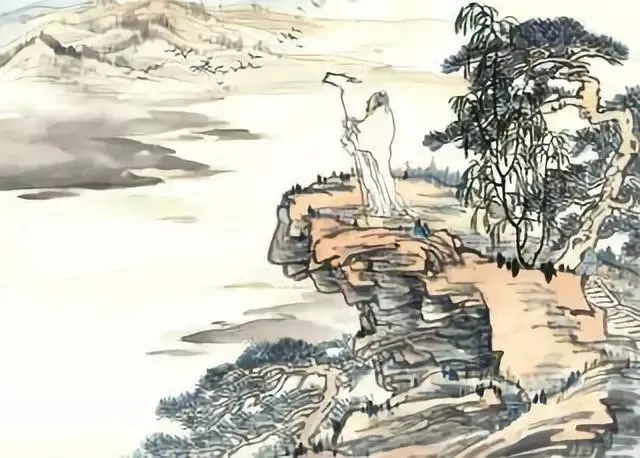
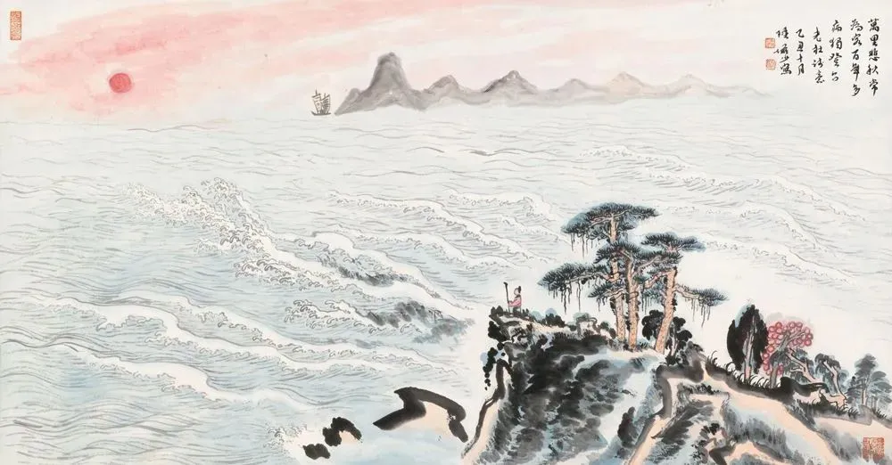
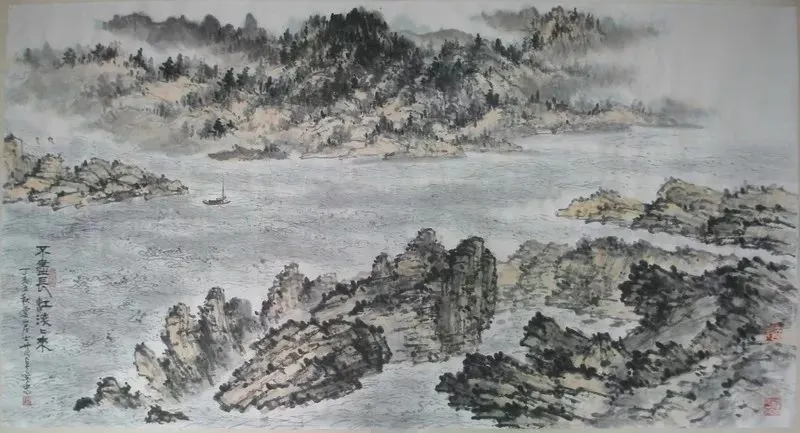

杜甫是我国唐代伟大的现实主义诗人，他的诗具有丰富的社会内容、强烈的时代色彩，与李白合称“李杜”，对后世产生了深远的影响。今天让我们一起停下脚步，诵读被誉为“七律之冠”的《登高》，倾听诗圣杜甫的心声。
【唐】杜甫
风急天高猿啸哀，渚清沙白鸟飞回。
无边落木萧萧下，不尽长江滚滚来。
万里悲秋常作客，百年多病独登台。
艰难苦恨繁霜鬓，潦倒新停浊酒杯。

这是一首重阳登高感怀诗。此诗作于公元767年（唐代宗大历二年）秋天，杜甫时在夔州。这是他在五十六岁时写下的。一天他独自登上夔州白帝城外的高台，登高临眺，萧瑟的秋江景色，引发了他身世飘零的感慨，渗入了他老病孤愁的悲哀。于是，就有了这首被誉为“七律之冠”的《登高》。
诗意：天高风急，猿啸声声似乎蕴含着无限的悲哀，孤洲沙白的河洲上有鸟儿在盘旋。无边无际的落叶纷纷飘坠，望不到头的长江水滚滚奔腾而来。悲对秋景感慨万里漂泊常年为客，一生当中疾病缠身今日独上高台。历尽了艰难苦恨白发长满了双鬓，衰颓满心偏又暂停了浇愁的酒杯。诗中表达了诗人对时光易逝、生命短暂的悲叹，也揭示了诗人对国家兴衰、自身境遇的感慨和忧虑。诗人运用独特的意象和生动的语言，表达了生命的珍贵和对生活的热爱，具有深刻的思想内涵和艺术魅力。

如一般诗篇，《登高》首联写景，开门见山，渲染悲凉气氛。诗中如是写到：风急天高猿啸哀，渚清沙白鸟飞回。这两句都是动静结合，寓静于动中构造了一幅以冷色调着墨的绝妙的水墨画。而从整幅画的构造视角来说，这是一幅描画天地之一处的视野较窄的微观水墨画。
颔联进一步表现了秋天的特点。诗人通过描绘落叶和江水，表达了对生命和时间的感悟。落木萧萧和江水滚滚的形象，形象地表现了生命的短暂和时光的流逝。
颈联诗人通过对自身境遇的描写，表达了对生命的感悟。诗人漂泊异乡，孤独无助，面对秋天的景色，更加强化了对生命的思考。而“百年多病独登台”则表达了诗人对自身健康的担忧和对生命的敬畏。
尾联诗人通过描写自己的形象和饮酒的行为，表达了对生活的无奈和对生命的感慨。诗人满头白发、生活艰辛，面对秋天的景色，更加感到生活的艰难和苦恨。而“潦倒新停浊酒杯”则表达了诗人的失意和落寞，对生命的无奈和失望。

一首《登高》读下来，作者的内心的世界全部都展露在我们的面前，这就是诗圣的情怀，这也是当时诗圣眼中的世界。杜甫是衔接盛唐到中唐转变的伟大诗人，他忧国伤时，善于把时代的灾难，民生的涂炭和个人的不幸结合起来，他的诗歌是安史之乱前后的一部“诗史”。希望同学们和老师一起，追寻诗人伟大的足迹，开拓我们的人生视野，共读诗词，体味中华传统文化的魅力。